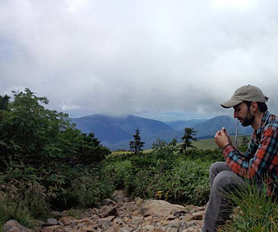
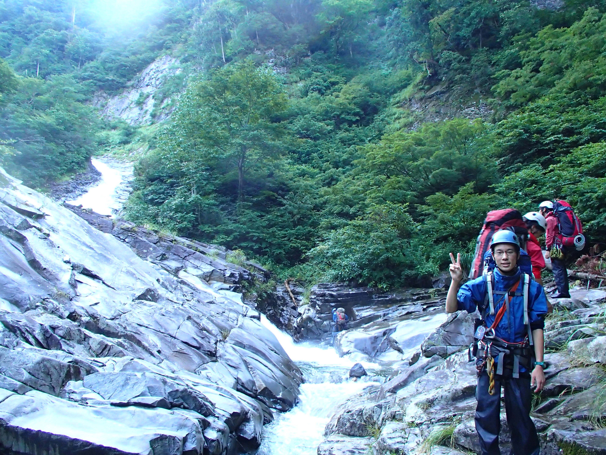
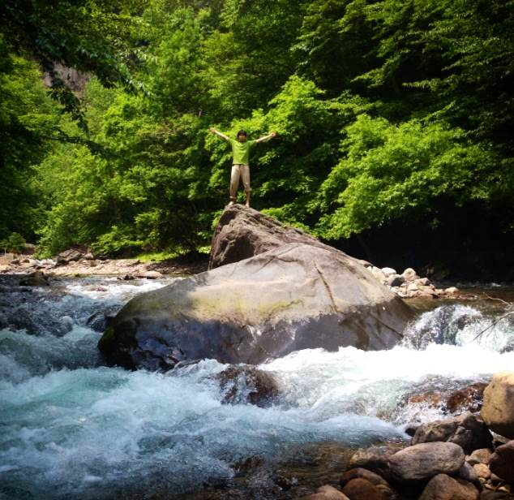
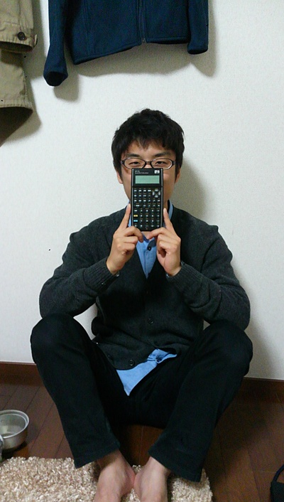
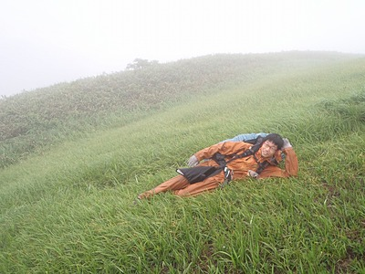

Members

Peter Muehleder
- 日本で行ってみたいところ
- 屋久島、知床
- 好きな本
- 荒野のおおかみ（ヘルマン・ヘッセ）
- 食べれないもの
- いか
- やってみたいこと
- 北海でセーリング
- 将来の悪夢
- サラリーマンになること
- 口癖
- 「面倒くさい」
- ひとこと
- 東京から逃げたい
大西 大
- 好きな本の著者
- リチャード・ドーキンス、ジャレド・ダイアモンド、上橋菜穂子 etc.
- 募集中
- おすすめの本
- 最近の悩み
- 時間がなくて本が読めない
- 山で駆られる衝動
- その景色をずっと眺めていたくなる
- 今年中にやってみたかったこと
- 満天の星空の下でオカン
- 10月の沢でやってみた結果
- 寒かった
- 大学での目標
- とにかくいろいろな体験をたくさんする
- 将来の職業
- 迷い中
- ひとこと
- バイト…


中村 凌熙
- 住み処
- 山
- 好きな本
- Tillie and the Wall、魔の山
- 好きな山行
- 単独行、あるいは歩く場所を他人に指定されない山行
- 好きな言葉
- 海なんてモーセにぱかっとされてろ
- 当面の夢
- 1学期間毎週末参加
- 将来の夢
- 分野を繋ぐ人材
藤原 旭宏
- 趣味
- 本を
- 好きな文房具
- 計算尺
- 山でしてみたいこと
- アマチュア無線
- 野望
- 体を使わずに家賃を稼ぐ
- ひとこと
- 「膝枕する」は寝ることを指すのか坐ることを指すのか教えてくれる人、いませんか


保田 和彦
- 好きな山行
- 日光が隠れる程度に曇った景色の良い笹藪
- 来年したいこと
- 沢…
- 好きな漫画
- もやしもん、ARIA、ドリフターズ
- 最近の悩み
- 漫画読み仲間がいない
- ひと言
- 入って気にしだしたこと=cal/g